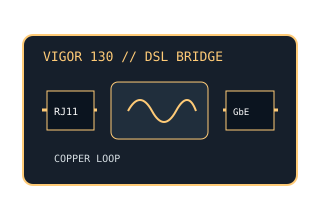

[ MODEL-SPECIFIC NETWORK HARDWARE ]
DrayTek Vigor 130 VDSL2/ADSL2+ Modem
DSL bridge-oriented modem with Annex A copper-line operation, selectable VDSL2 profiles and one Gigabit Ethernet handoff.

EXACT MODEL: DrayTek Vigor 130. This is not the later Vigor 165/167 and not a regionally distinct Annex B unit.
Exact specifications and compatibility
| Model / SKU | DrayTek Vigor 130, Annex A regional model. |
|---|---|
| Modem standard | VDSL2 ITU-T G.993.2, profiles 8a/b/c/d, 12a/b, 17a and 30a; supports ADSL/ADSL2/ADSL2+ Annex A fallback and G.vector/G.INP features subject to firmware and DSLAM. |
| Interfaces | RJ-11 xDSL line socket; 1 × 10/100/1000BASE-T RJ-45 Ethernet LAN/handoff. Bridge mode is the normal modem-only setup. |
| Downstream / upstream | VDSL2 line capability up to 100Mb/s downstream and up to 100Mb/s upstream on supported profiles; ADSL2+ Annex A up to 24Mb/s downstream with Annex/profile-dependent lower upstream capacity. Loop length, noise and ISP profile reduce attainable rates. |
| Telephone service | The RJ-11 connector carries DSL on the subscriber pair; this model has no analog telephone output or VoIP telephone service. Use the provider-prescribed POTS splitter/filter where voice shares the pair. |
| Provider compatibility | Requires a copper DSL service using a supported Annex and VDSL2 profile/ADSL mode; confirm DSLAM interoperation, VLAN/PPPoE handoff and Annex with the ISP. It is not a cable or fiber ONT. |
| Firmware / host compatibility | DrayTek publishes firmware and configuration documentation for Vigor 130; match region, hardware and firmware release before updating. Ethernet bridge operation needs no PC modem driver; ISP credentials and VLAN settings are external. |
| Power and safety | 12V DC, 1A supply; maximum consumption listed as 6W. Use the rated adapter, keep ventilation clear, protect the indoor unit from moisture and do not connect the low-voltage input to mains. |
Model-specific notes
VDSL2 maximum rates depend on the profile and copper loop. In bridge mode the connected router handles PPPoE, VLAN, routing, DHCP and firewall functions.
Manufacturer specifications and manual
- DrayTek Vigor 130 official product specificationsManufacturer specification for DSL standards, profiles, interfaces, and line-rate capability.
- DrayTek Vigor 130 Quick Start GuideManufacturer-hosted setup and safety guide for the model.
- DrayTek Vigor 130 firmware and downloadsOfficial regional support route; check hardware, region and firmware release applicability.